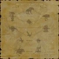

Level 75 reference · Zenith rules

Location:
Southern San d'Oria (D-7)
Notes


- Hrmm... Good eyes, friend. I thought my presence unknown, but you found me. You are fortunate... For my knowledge of the enemy, culled from many years on the battlefield, can be yours. Look at the tattered diagram?
- "Yes.": Good. Curiosity is a virtue! Look at my diagram, and listen well, for I shall say this but once. This is the law of relations: Beasts bare their fangs at dim-witted lizards, while the lizards must turn to the vapid vermin for their sup. The multitude of vermin crop plantoids close to the ground, while the long-lived plantoids draw nourishment from the corpses of beasts with their roots. Birds that wing the skies carry aquans to their graves, while water-wise aquans suck the shapeless form of amorphs dry. The silent, shapless amorphs slip into the nests of birds and feed on their feathery brood. And this is the law of oppositions: The cursed undead shun the pseudo-life of the arcana, while the arcana avoid the undead. The immortal dragons shun the death-bringing demons, while the demon spellweavers avoid dragons, against whom their magic is useless. All of this is different from the regular divisions of life, based upon my own experience and observation. Sharpen your senses, and watch your enemies closely. Soon a world of understanding will open before you.
- "No.": "Know they enemy, know thyself. A hundred battles, a hundred victories." A great general of antiquity spoke these words.
Adapted from Eden Wiki: Guilboire · Contributors and history · CC BY-SA 4.0. Revision 46720. Layout, links and optional background text adapted for Zenith.